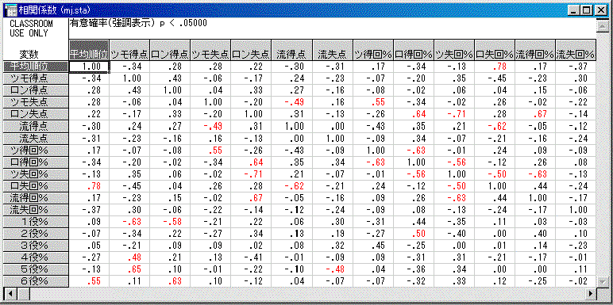

平均順位（強さ）に最も影響を与える指標
2000/1/21 ワニ噛み
目的：
麻雀をやっていて、Ｒ（平均順位）を上げるにはどうすればよいのか？
・安上がりを多くした方が良い。
・降りたほうが良い。
・テンパイスピードｘ得点期待値だよ。
・それらのバランスだよ。
などと、直感に頼らず。データを調べることで、数値的にどれとどれが相関してるのかを平均順位だけと言わず幅広く考えていこう。
計算方法：
1つの個体について複数個在る場合、例えば、1人の平均順位と和了率のようなデータ関係を考える。このデータの組の関係
を見る方法として、両者をグラフの縦軸と横軸にとり、固体ごとのデータをグラフ上の点として示す、相関図を用いるものである。
・相関図で見て一方の変数Ｘが増加する時に、他方のＹも増加する傾向が見られれば、正の相関。傾向が逆ならば、負の相関、
関連性が見られれなければ、無関係となる。
・正の相関でも、負の相関でも、傾向がはっきりしていれば相関が強い。傾向がぼんやりしていれば、相関が弱いと言える。
→そこで、相関の正負や程度を数値で表すのが｢相関係数｣ある。
＝＝＝相関係数｢ｒ｣の計算＝＝＝
変数Ｘ、Ｙのそれぞれの平均値をＸ（平均）、Ｙ（平均）、標準偏差をσ（Ｘ）、σ（Ｙ）として、
Ｘ’＝（Ｘ−Ｘ（平均））/σ（Ｘ）
Ｙ’＝（Ｙ−Ｙ（平均））/σ（Ｙ）
なる座標の変換をすれば、変量の組（Ｘ’、Ｙ’）の分布の中心は原点で、標準偏差は１になる。
・正の相関があれば第１象限と第３象限に点が多く分布し、Ｘ’Ｙ’の積は正の数が多いいから、その平均ｒ＝１/Ｎ ・ΣＸ（i）'Y(i)'は１に近くなる。
・負の相関があれば第２と第４象限に多くの分布し、ｒはー１に近くなる。
・無相関であれば、４つ象限に偏りなく分布し、ｒは０に近付く。
ｒ＝１/Ｎ ・ΣＸ（i）’Y(i)’＝1/N ・Σ（Ｘ（i）-X(平均)）（Ｙ（i）−Ｙ（平均））/σ（Ｘ）σ（Ｙ）
簡単に言うと、
・絶対値が１に近い程、関係がある。（０．５以下は無相関として良い。）
・符号が正だと、一方が上がれば片方も上がる。符号が負だと、一方が上がれば片方は下がる。
結果：

・対角線上の相関は当然１ですね。また、右上と左下は対象になってます。
・ツモ得点＝ツモ平均得点、ロン得点＝ロン平均得点、ツモ失点＝ツモ平均失点、ロン失点＝ロン平均失点、流得点＝流局平均得点、流失点＝流局平均失点
・ツ得回％＝（ツモ得点回数）/（総局数）、ロ得％＝（ロン得点回数）/(総局数)、・・・
・１役％＝（1役あがった回数）/（総あがった回数）、２役％＝（２役あがった回数）/（総あがった回数）、・・・
考察：
平均順位と相関してるのは、ロン失点回数ですね。正の相関ですから、ロン失点回数が上がると平均順位が上がる（Ｒが下がる）わけです。
その他はほとんど、絶対値０．４以下となってますね（６役以上を除く）。通常、０．５以下は無相関として扱われます。
この結果から、「麻雀に強い」とは「ロンされない」ことである、と言うことができます（会長の麻雀講座にありましたね）。
たくさん上がることや、ましてや「常に攻めの姿勢を崩さない」ことではないですね(笑)。
さらに、流局得点％と平均順位は正に、流局失点％と平均順位と負に、それぞれわずかながら相関しています。このことから、一般に言われがちな「攻める姿勢が重要」とは全く逆に、「守る姿勢が重要」と言えると思います。
また興味深いのは、ハネマン（以上）の上がり率と平均順位が正に相関することです。
ハネマン・バイマンというのは非常に効率の悪い役であるとわかります。
こちらも会長（とつ）の麻雀講座にもありましたが、上がりにくくしてまでマンガンをハネマンに伸ばしてはいけないと言えるでしょう。
その他、データを見ることでいろいろなことが分かります。
例えば、同じ得点なら、ロン得点よりツモ得点のほうが得!
まぁ大きな相関ではないですが、これは麻雀というゲームのシステムを考えれば理解できることだと思います。。
最後に：
このほかにも、平和率などの相関も出して〜などの要望を承ります。しかし、データ数が３０前後しかあらず。要望と共に、
雀友集計のテキスト形式（対戦成績はいりません）
を送ってれることをお願います。
とつより：
恒例となりましたワニ論文です( ≧∇≦)ﾌﾞﾊﾊﾊ! 今回は統計ソフトを用いたやつですな。
細かく言えば、平均順位を１次の相関係数で処理することがちょっとあれではあるんだが(笑)、結果は非常にうまいこと出ていて問題ないでしょう。
今までおれが、「経験をもとに」麻雀講座に書いてたことが、これでしっかり数値的に実証されたことになります(笑)。ナイス研究(爆)。
おれからの要望。他に入れて欲しい変数は
ピンフ率（上がり回数に対する）
一局当たりの収入期待値（得点期待値−失点期待値）×平均局数
です。
ピンフの有効性がどの程度か？ てことはもちろん知りたいし・・・。
とくに（１局当たりの収入期待値×平均局数）と平均順位の相関係数は、ぜひ知りたい！！
つまり、「１試合が終了した時点での獲得点」と「平均順位」は、普通１．０の相関があると思うでしょう？ それが例えば０．７とかになったなら、残り０．３の分が、「得点状況に応じた安上がりとかの判断の巧さ」の分に相当するわけで。役作り・ベタオリの他にもこういう巧さが麻雀には極めて重要だと思うからね。
これは本当に、ぜひやってほしい。